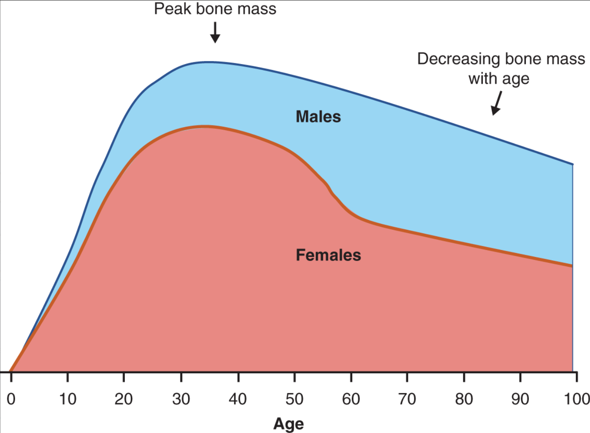
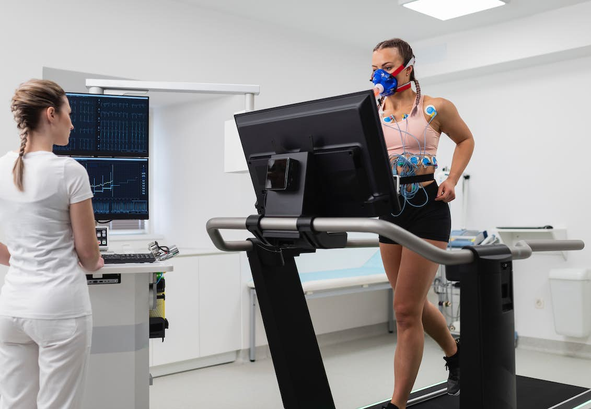

Physical changes
Appearence
- Physical changes are perhaps the most evident changes in any human being.
- Society also marks what changes are desirable or not.
- There’s no doubt that aging implies many times changing habits, routines, and expectations.
- Let’s study the most important physical changes.
I know aging is tough, but as scientist and practitioner scientists we should understand that there are ways to live a healthy adulthood and age with energy and empowered.
Changes in skin
- This is the most obvious change in life. You start noticing wrinkles, you perhaps start finding small dark dots in your skin. And your skin might be dryer overtime. These are the reasons:
- The skin adapts to the bone mass reduction in the skull.
- Face muscles have less elasticity.
- Elastin, a molecule that is supposed to provide flexibility, becomes less able to return to its original shape after it is stretched during a person’s movements.
- Exposure to sunlight increases wrinkles.
- Problems in toenails are frequent as we age.
Changes in hair
- It is easy to spot when somebody has grey hair.
- This happens because the pigmented hair falls and new grey hair starts to grow. The melanin is sparse when we get old causing growing hair less pigmented.
- Androgenic alopecia causes hair loss.
Changes in muscles, BMI, and height
We get shorter when we age, this is part of the process.
Aging implies to loss muscle and strength. The process where we loss muscle is named sarcopenia.
Tendons are stiffer.
Increase risk of falling.
the Body Mass Index (BMI) decreases when you reduce your muscle mass. It is even more dangerous to increase fat while reducing muscle. This is correlated with diabetes.
What should we do to slow down losing muscle? Excercises with weights, changes in diet, changes in cardiovascular activity.
Changes in bone mass
- Our bone tissue has the capability to regenerate, but this ability decreases overtime.
- There is a strong correlation between bone mass and a longer life.

Changes in the cardiovascular system
One of the most important systems when talking about healthy aging.
It is heavily impacted by life style and diet, and of course genetic factors.
The ratio of High-density lipoproteins (HDLs) and High-density lipoproteins (HDLs) is a good indicator of a healthy cardiovascular system. When the proportion is unbalanced between these lipoproteins, a plaque starts growing in the arteries.
In research we use the VO2 max and Vo2 Peak to determine how healthy is your cardiovascular fitness. This is a measure of the maximum amount of oxygen intake. VO2 max is correlated with cognition.

Changes the respiratory system and urinary system
Lungs are also affected by the muscle loss, along with less elastic lungs.
The urinary system also suffers some changes. As we age our bladder won’t hold urine efficiently. In males, the prostate gets larger (hypertrophy) and it might cause urinary problems.
There is distress in older adults when these changes start happening. Urinary changes might cause sedentarism, therefore the overall health decreases.
Changes in the endocrine system
- Growth Hormone.
- Cortisol: effect on hippocampus.
- Thyroid Hormones: basal metabolic rate (BMR). The BMR slows overtime.
- Melatonin: Circadian rhythm.
- Menopause.
- Andropause.
- Erectile dysfunction.
Changes in nervous system
- Neural fallout model: the central nervous system is not able to regenerate neurons or replace neurons with new cells.
- This was seen like an important factor to claim that aging adults are not able to learn.
- Nowadays, theories related to neural plasticity are changing this idea.
- The Compensation-Related Utilization of Neural Circuits Hypothesis (CRUNCH) model proposes that the demands of cognitively challenging tasks cause an overall excitation of brain activity in older adults leading to overall patterns of compensation not limited to one particular area.
Neuroplasticity can be conceptualized as an intrinsic property of the brain that enables modification of function and structure in response to environmental demands, via the strengthening, weakening, pruning, or addition of synaptic connections, and by promoting neurogenesis (Gobbi Porto et al., 2015).